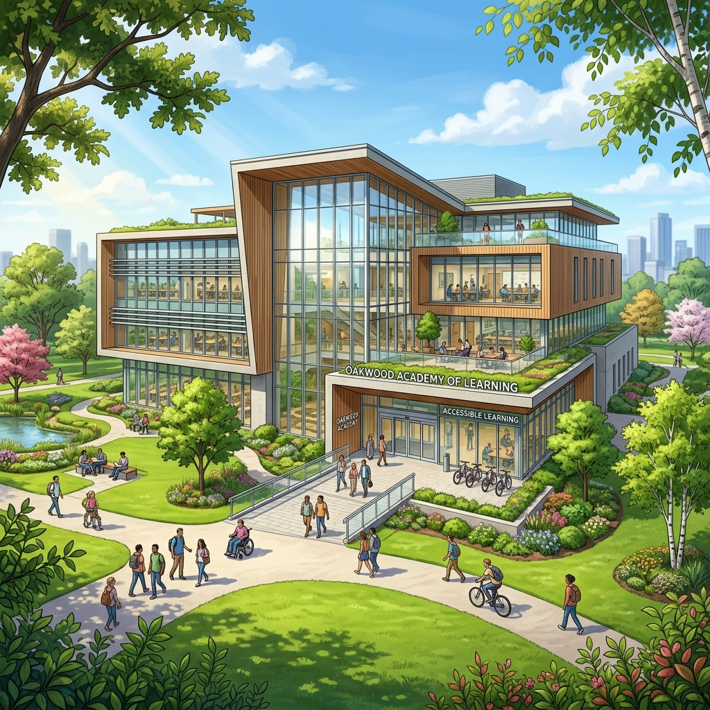

Berufsförderungswerk Dortmund Vocational Retraining Center (BFW) Dortmund
Quelle: Wikipedia, aktualisiert: 17. April 2024 Source: Wikipedia, updated: April 17, 2024

Allgemeine Infos General Information
Es gibt in Deutschland 28 Berufsförderungswerke an zahlreichen Standorten. Sie bilden ein flächendeckendes Netzwerk für Arbeit und Gesundheit. Ihr oberstes Ziel ist es, Menschen mit gesundheitlichen Einschränkungen nach Krankheit oder Unfall auf ihrem Weg zurück ins Arbeitsleben zu begleiten. Sie arbeiten eng mit den Reha-Trägern wie der Deutschen Rentenversicherung, den Berufsgenossenschaften und der Bundesagentur für Arbeit zusammen.
There are 28 vocational retraining centers (BFW) in Germany. They form a nationwide network for health and labor. Their primary goal is to guide people with health limitations after illness or accident back into the workforce. They work closely with rehabilitation sponsors like the German Pension Insurance, trade associations, and the Federal Employment Agency.
Zu den Ausbildungen gehören diverse kaufmännische Berufe (Bürokaufleute, Industriekaufleute etc.), IT-Berufe (Fachinformatiker, Mediengestalter etc.) und gewerblich-technische Berufe (Bauzeichner, Zerspanungsmechaniker, Mechatroniker uvm.).
Vocational programs include various business occupations (office administrators, industrial clerks), IT occupations (application developers, media designers), and technical professions (such as draftspersons, machinists, mechatronics technicians).
Wer profitiert von den BFWs? Who benefits from BFWs?
Ein BFW ist besonders für Menschen mit gesundheitlichen Einschränkungen eingerichtet und spezialisiert. Es gibt medizinische, sozialpädagogische und psychologische Fachdienste und Leistungen zur Unterstützung der Rehabilitanden während der Ausbildung. Alle Lehrgangsräume, Lernorte, Ausbildungswerkstätten und Internatsappartements sind barrierefrei zugänglich und behindertengerecht ausgestattet. Für jeden Teilnehmer wird mindestens das Mittagessen in der Kantine vom Kostenträger erstattet.
A BFW is specially designed for individuals with health restrictions. Medical, socio-pedagogical, and psychological support services assist the rehabilitation trainees during their education. All classrooms, workspaces, workshops, and dorms are fully barrier-free and accessible. Lunch in the cafeteria is fully reimbursed by the sponsor for every trainee.
Menschen, die weiter weg wohnen, werden im Internat untergebracht. Wie für Reha-Maßnahmen üblich, wird jedem Rehabilitanden ein Einzelzimmer mit eigenem Bad zur Verfügung gestellt. Darüber hinaus gibt es Frühstück und Abendessen im BFW und diverse Freizeitangebote wie Schwimmen, Fitness, E-Bike-Touren, Sportplätze, Gruppenbesichtigungen in der Stadt bis hin zu einer kleinen internen Bar für das ein oder andere Feierabendbier.
Trainees living further away reside in the on-site dormitory. Every trainee is provided a private single room with an en-suite bathroom. BFW offers breakfast, dinner, and various recreational activities like swimming, fitness facilities, e-bike tours, sports grounds, city tours, and a small in-house bar for an evening beer.
Voraussetzungen für die Teilnahme Prerequisites for Participation
Die Teilnahme an der Hauptmaßnahme ist nur möglich, wenn ein Anspruch auf Leistungen zur Teilhabe am Arbeitsleben (LTA) nach dem Neunten Buch Sozialgesetzbuch (SGB IX) besteht. Teilnehmer sollten über eine abgeschlossene Erstausbildung verfügen bzw. nicht mehr schulpflichtig sein. Nur so ist eine verkürzte Ausbildungszeit für einen vollwertigen Lehrberuf auf zwei Jahre umsetzbar.
Participation is only possible if the trainee is entitled to Benefits for Participation in Working Life (LTA) according to the Social Security Code (SGB IX). Candidates should ideally have completed a prior apprenticeship or be beyond school age. This is key to compacting a regular qualification into a shortened two-year duration.
Die Kosten der Maßnahme werden nach einer Bewilligung von den Rentenversicherungen, den Berufsgenossenschaften, der Bundesagentur für Arbeit oder den Krankenkassen getragen.
Once approved, the retraining costs are covered by the pension insurance, trade associations, employment agencies, or health insurance funds.
Ausbildungspalette Range of Professions
Alle angebotenen Lehrgänge an den BFWs entsprechen anerkannten Ausbildungsberufen; die Prüfungen werden in der Regel vor der Industrie- und Handelskammer (IHK) oder anderen staatlichen Stellen abgelegt. Die Dauer für die Ausbildung in einem neu zu erlernenden Beruf ist auf zwei Jahre (vier Semester) verkürzt.
All retraining courses correspond to officially recognized occupations. Final exams are held before the Chamber of Industry and Commerce (IHK) or other state offices. The duration to learn a new profession is compressed to two years (four semesters).
Die Ausbildungspalette ist individuell in jedem der 28 BFWs verschieden. Es werden kaufmännische und gewerblich-technische Ausbildungen, aber auch Berufe wie Gärtner oder Kosmetikerin angeboten, die je nach Art der gesundheitlichen Einschränkung erfolgreich absolviert werden können und für die es auch einen Bedarf an Arbeitskräften gibt.
The specific courses vary across the 28 facilities. Business, technical, and special occupations (like gardeners or cosmeticians) are offered. These can be successfully completed depending on the trainee's health profile, targeting jobs with high market demand.
Beispiele: Examples:
- Kaufmännische Berufe:Business Occupations: Automobilkaufleute, Bürokaufleute, Industriekaufleute, Groß- und Außenhandelskaufleute, Kaufleute im Gesundheitswesen Automotive sales clerks, office administrators, industrial clerks, wholesale and foreign trade clerks, healthcare clerks
- IT-Berufe:IT Occupations: Fachinformatiker, Mediendesigner in Digital- und Printmedien, Mediengestalter, Systemkaufleute, Systemelektroniker IT Specialists (Developers/Administrators), digital/print designers, media designers, system clerks, system electronics technicians
- Gewerblich-technische Berufe:Technical Occupations: Bautechniker, Bauzeichner, Mechatroniker, Orthopädiemechaniker, Technischer Zeichner, Zerspanungsmechaniker Structural technicians, draftspersons, mechatronics technicians, orthopedic technicians, technical draftspersons, machinists
Ausbildungsablauf Training Process
Rehabilitanden absolvieren ihre Ausbildung überwiegend am BFW bzw. an zugehörigen Einrichtungen, wodurch die Eigenschaften normaler Berufsschulen mit denen von Lehrwerkstätten und anderen Praxiseinrichtungen verknüpft werden. Mehr zum Ausbildungsablauf erfahren Sie hier.
Rehabilitation trainees complete their training primarily at the BFW or associated centers, combining elements of normal vocational schools with hands-on practice. Learn more about the training timeline here.
Es gibt auch Ausnahmen wie meine Umschulung: Diese findet im Kooperationsmodell (KOOP) statt, weshalb ich ein begleitendes Praktikum parallel zu den Theoriephasen des BFWs absolviere.
There are exceptions like my retraining: It runs under the cooperative model (KOOP), meaning I complete a parallel industry internship alongside theoretical phases at the BFW.